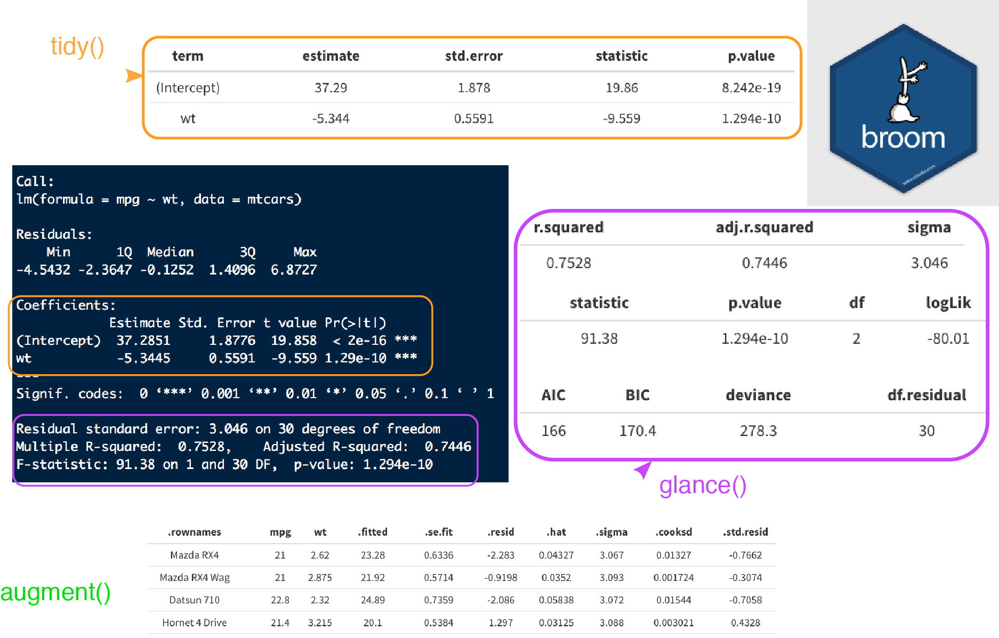
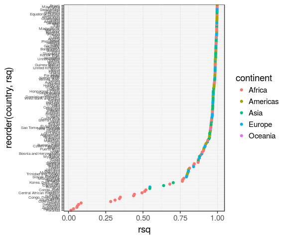
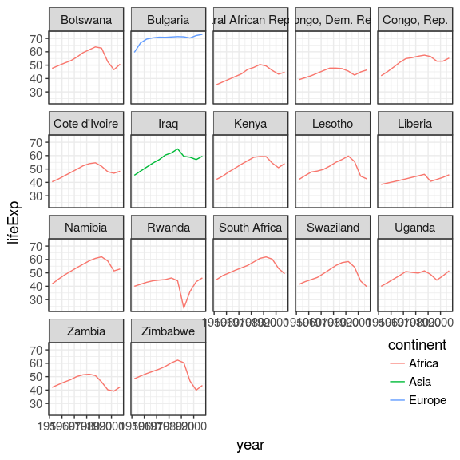
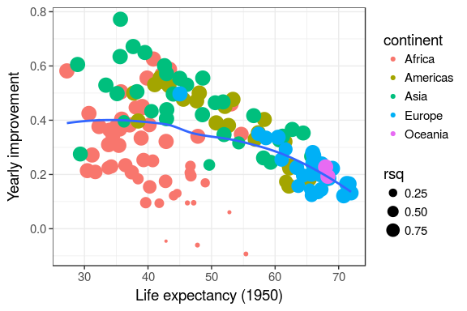

You will learn to:

- use
dplyr/purrrfor efficient data manipulation - tidying linear models using
broom - managing workflow by keeping related things together in one
tibble.
4 May 2017
dplyr / purrr for efficient data manipulationbroomtibble.Tutorial based on the great conference by Hadley Wickham

progress bar will be added


gapminderlibrary("gapminder")
gapminder %>%
ggplot(aes(x = year, y = lifeExp, group = country)) +
geom_line()
by_country <- gapminder %>% mutate(year1950 = year - 1950) %>% group_by(continent, country) %>% nest() by_country
# A tibble: 142 x 3
continent country data
<fctr> <fctr> <list>
1 Asia Afghanistan <tibble [12 x 5]>
2 Europe Albania <tibble [12 x 5]>
3 Africa Algeria <tibble [12 x 5]>
4 Africa Angola <tibble [12 x 5]>
5 Americas Argentina <tibble [12 x 5]>
6 Oceania Australia <tibble [12 x 5]>
7 Europe Austria <tibble [12 x 5]>
8 Asia Bahrain <tibble [12 x 5]>
9 Asia Bangladesh <tibble [12 x 5]>
10 Europe Belgium <tibble [12 x 5]>
# ... with 132 more rowsyear1950 will help to get count oldest datecontinent to group_by() to keep the infogapminder %>% filter(country == "Germany") %>% select(-country, -continent)
# A tibble: 12 x 4
year lifeExp pop gdpPercap
<int> <dbl> <int> <dbl>
1 1952 67.500 69145952 7144.114
2 1957 69.100 71019069 10187.827
3 1962 70.300 73739117 12902.463
4 1967 70.800 76368453 14745.626
5 1972 71.000 78717088 18016.180
6 1977 72.500 78160773 20512.921
7 1982 73.800 78335266 22031.533
8 1987 74.847 77718298 24639.186
9 1992 76.070 80597764 26505.303
10 1997 77.340 82011073 27788.884
11 2002 78.670 82350671 30035.802
12 2007 79.406 82400996 32170.374by_country %>% filter(country == "Germany") %>% pull(data) # dplyr 0.6, .$data for dplyr 0.5
[[1]]
# A tibble: 12 x 5
year lifeExp pop gdpPercap year1950
<int> <dbl> <int> <dbl> <dbl>
1 1952 67.500 69145952 7144.114 2
2 1957 69.100 71019069 10187.827 7
3 1962 70.300 73739117 12902.463 12
4 1967 70.800 76368453 14745.626 17
5 1972 71.000 78717088 18016.180 22
6 1977 72.500 78160773 20512.921 27
7 1982 73.800 78335266 22031.533 32
8 1987 74.847 77718298 24639.186 37
9 1992 76.070 80597764 26505.303 42
10 1997 77.340 82011073 27788.884 47
11 2002 78.670 82350671 30035.802 52
12 2007 79.406 82400996 32170.374 57by_country_lm <- by_country %>% mutate(model = map(data, ~ lm(lifeExp ~ year1950, data = .x))) by_country_lm
# A tibble: 142 x 4
continent country data model
<fctr> <fctr> <list> <list>
1 Asia Afghanistan <tibble [12 x 5]> <S3: lm>
2 Europe Albania <tibble [12 x 5]> <S3: lm>
3 Africa Algeria <tibble [12 x 5]> <S3: lm>
4 Africa Angola <tibble [12 x 5]> <S3: lm>
5 Americas Argentina <tibble [12 x 5]> <S3: lm>
6 Oceania Australia <tibble [12 x 5]> <S3: lm>
7 Europe Austria <tibble [12 x 5]> <S3: lm>
8 Asia Bahrain <tibble [12 x 5]> <S3: lm>
9 Asia Bangladesh <tibble [12 x 5]> <S3: lm>
10 Europe Belgium <tibble [12 x 5]> <S3: lm>
# ... with 132 more rows
library("broom")
models <- by_country_lm %>%
mutate(glance = map(model, glance),
rsq = glance %>% map_dbl("r.squared"),
tidy = map(model, tidy),
augment = map(model, augment))
models
# A tibble: 142 x 8
continent country data model glance
<fctr> <fctr> <list> <list> <list>
1 Asia Afghanistan <tibble [12 x 5]> <S3: lm> <data.frame [1 x 11]>
2 Europe Albania <tibble [12 x 5]> <S3: lm> <data.frame [1 x 11]>
3 Africa Algeria <tibble [12 x 5]> <S3: lm> <data.frame [1 x 11]>
4 Africa Angola <tibble [12 x 5]> <S3: lm> <data.frame [1 x 11]>
5 Americas Argentina <tibble [12 x 5]> <S3: lm> <data.frame [1 x 11]>
6 Oceania Australia <tibble [12 x 5]> <S3: lm> <data.frame [1 x 11]>
7 Europe Austria <tibble [12 x 5]> <S3: lm> <data.frame [1 x 11]>
8 Asia Bahrain <tibble [12 x 5]> <S3: lm> <data.frame [1 x 11]>
9 Asia Bangladesh <tibble [12 x 5]> <S3: lm> <data.frame [1 x 11]>
10 Europe Belgium <tibble [12 x 5]> <S3: lm> <data.frame [1 x 11]>
# ... with 132 more rows, and 3 more variables: rsq <dbl>, tidy <list>,
# augment <list>models %>% ggplot(aes(x = rsq, y = reorder(country, rsq))) + geom_point(aes(colour = continent)) + theme(axis.text.y = element_text(size = 6))

models %>%
filter(rsq < 0.55) %>%
unnest(data) %>%
ggplot(aes(x = year, y = lifeExp)) +
geom_line(aes(colour = continent)) +
facet_wrap(~ country) +
theme(legend.justification = c(1, 0),
legend.position = c(1, 0))
models %>% unnest(tidy) %>% select(continent, country, rsq, term, estimate) %>% spread(term, estimate) %>% ggplot(aes(x = `(Intercept)`, y = year1950)) + geom_point(aes(colour = continent, size = rsq)) + geom_smooth(se = FALSE, method = "loess") + scale_size_area() + labs(x = "Life expectancy (1950)", y = "Yearly improvement")

library(gganimate)
gapminder %>%
ggplot(aes(x = gdpPercap,
y = lifeExp,
size = pop,
color = continent,
frame = year)) +
geom_point() +
scale_x_log10() -> p
gganimate(p, 'img/09_gapminder.gif')